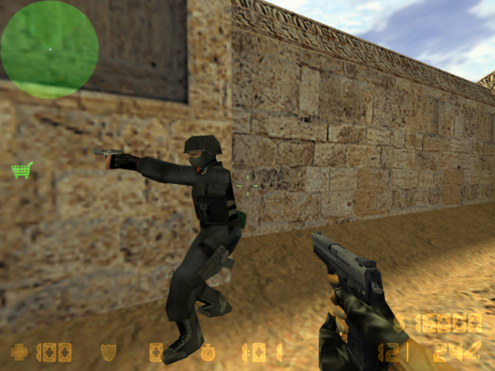
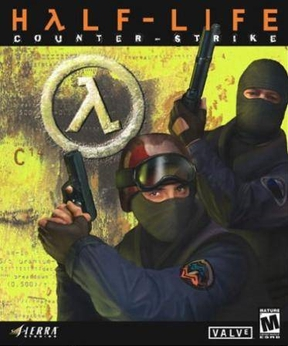
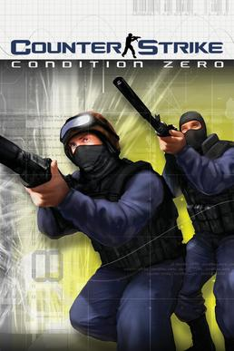
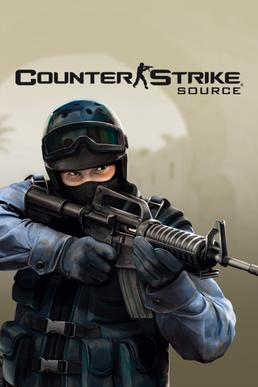
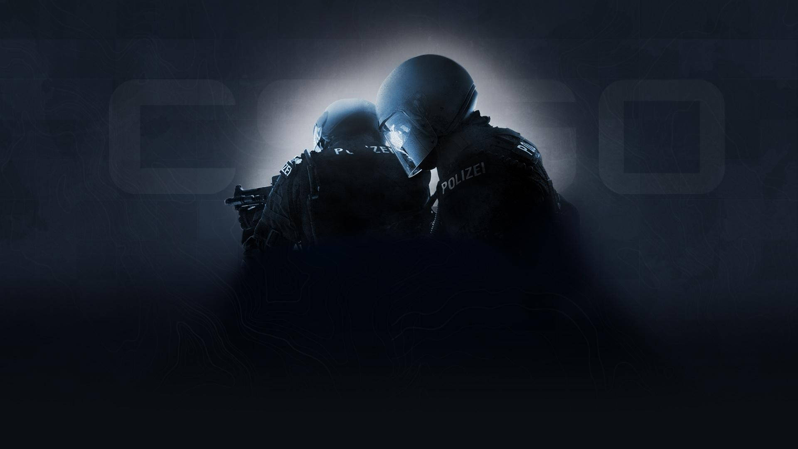
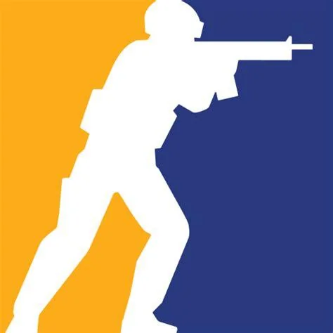
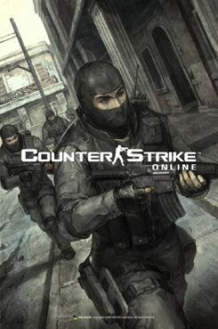

Desde sus inicios como 'mod' de Half Life hasta hoy en dia, Counter - Strike paso por muchos cambios

Fecha de Lanzamiento: 19/06/1999
Plataforma: Windows
Datos extra: Antes de su lanzamiento comercial, Counter-Strike estaba planeado a ser una modificacion (mod) de Half-Life hecho en GoldSrc (motor grafico), este todavia no era un producto de Valve, pero esta participaba en el desarollo

Fecha de Lanzamiento: 09/11/2000
Plataforma: Windows
Datos extra: Primera version de CS (Counter Strike) lanzada al mercado por Valve, quienes habian contratado a los creadores originales de la modificacion.

Fecha de Lanzamiento: 23/03/2004 (23/06/2010 para MacOS y XX/02/2013 para Linux)
Plataforma: Windows, OS X (MacOS) y Linux
Datos extra: Ademas del multijugador caracteristico de CS, Condition Zero tenia un modo de un solo jugador llamado "Tour of Duty", donde el jugador debia completar un objetivo dentro de una partida mas corta.

Fecha de Lanzamiento: 07/10/2004 (06/03/2013 para OS X y Linux)
Plataforma: Windows, OS X (MacOS) y Linux
Datos extra: Este es un remake del CS original (Half Life: Counter - Strike) en "Source", Motor grafico del juego Half Life 2.

Fecha de Lanzamiento: 21/08/2012
Plataforma: Windows, PlayStation 3, Xbox 360, OS X, Linux
Datos extra: Fue uno de las pocas versiones de Counter - Strike que salio en consolas.

Fecha de Lanzamiento: 27/09/2023
Plataforma: Windows, Linux
Datos extra: Fue uno de los primeros juegos diseñados en el nuevo motor grafico de Valve, Source 2.

Fecha de Lanzamiento: 24/07/08 en Taiwan (XX/12/13 para el resto de Asia)
Plataforma: Windows, Linux
Datos extra: Una de las versiones adaptada para el mercado de Asia, desarollado y publicado por "Nexon", siendo solo observado por Valve.